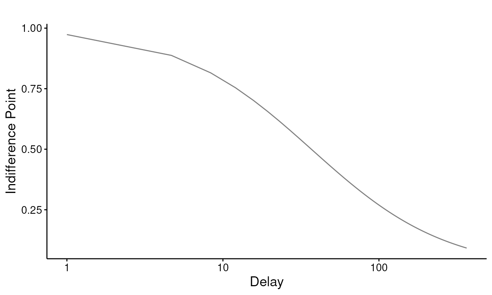

Getting started: indifference points, k, and AUC
Brent Kaplan
Source:vignettes/delay-discounting-basics.Rmd
delay-discounting-basics.RmdThis vignette covers the everyday delay-discounting workflow in
beezdiscounting: screen the data for quality, fit a
discounting model to get a rate k, and compute area under
the curve (AUC) as a model-free summary. It is the place to start before
moving on to the mixed-effects and Bayesian tiers.
Indifference points
A delay-discounting task trades a smaller-sooner reward against a
larger-later one across several delays. At each delay the
indifference point is the immediate amount that feels
equivalent to the later reward, expressed as a proportion of that later
reward, which places it on [0, 1]. A value near 1 means the
person barely discounts the delay; a value near 0 means the delayed
reward is worth almost nothing to them.
beezdiscounting works with long-format data: one row per
subject per delay, with columns id, x (the
delay), and y (the indifference point). Here is one
well-behaved subject:
clean <- data.frame(
id = "demo",
x = c(1, 7, 30, 90, 180, 365),
y = c(0.95, 0.81, 0.55, 0.32, 0.17, 0.08)
)
clean
#> id x y
#> 1 demo 1 0.95
#> 2 demo 7 0.81
#> 3 demo 30 0.55
#> 4 demo 90 0.32
#> 5 demo 180 0.17
#> 6 demo 365 0.08Screening for unsystematic data
Before fitting anything, check whether each subject’s indifference
points form an orderly, decreasing pattern.
check_unsystematic() applies the two criteria of Johnson
and Bickel (2008) to each subject’s points, taken in delay order, and
returns one row per id:
check_unsystematic(clean)
#> # A tibble: 1 × 3
#> id c1_pass c2_pass
#> <chr> <lgl> <lgl>
#> 1 demo TRUE TRUE-
Criterion 1 (
c1_pass) flags non-systematic increases: no indifference point may exceed the immediately preceding (shorter-delay) point by more thanc1(default 0.2, i.e. 20% of the larger reward). -
Criterion 2 (
c2_pass) flags a lack of overall discounting: the last indifference point must fall at leastc2(default 0.1) below the first.
Our demo subject passes both. Treat a failure as a signal to inspect that subject’s data rather than as an automatic exclusion. Noisy titration, a misunderstanding of the task, or genuinely shallow discounting can all trip these rules.
Fitting a discounting model
fit_dd() fits either Mazur’s (1987) hyperbola,
y = 1 / (1 + k * x), or the exponential model,
y = exp(-k * x). The method argument controls
how subjects are pooled: "two stage" fits each subject
separately, "mean" fits the averaged indifference points,
and "pooled" fits all rows together.
results_dd() tidies the fitted object into a data frame of
estimates and fit statistics:
fit <- fit_dd(clean, equation = "mazur", method = "two stage")
results_dd(fit)
#> # A tibble: 1 × 22
#> method id term estimate std.error statistic p.value sigma isConv finTol
#> <chr> <chr> <chr> <dbl> <dbl> <dbl> <dbl> <dbl> <lgl> <dbl>
#> 1 two st… demo k 0.0271 0.00157 17.3 1.18e-5 0.0223 TRUE 1.49e-8
#> # ℹ 12 more variables: logLik <dbl>, AIC <dbl>, BIC <dbl>, deviance <dbl>,
#> # df.residual <int>, nobs <int>, R2 <dbl>, auc_regular <dbl>,
#> # auc_log10 <dbl>, auc_ord <dbl>, conf_low <dbl>, conf_high <dbl>The estimate column is k, the discount
rate: larger values mean steeper discounting. results_dd()
also returns the standard error, a confidence interval
(conf_low, conf_high), R2, and
the usual information criteria. Swap
equation = "exponential" to fit and compare the exponential
form.
Plot the fit against the observed points with
plot_dd():
plot_dd(fit)
Area under the curve
AUC (Myerson, Green & Warusawitharana, 2001) summarizes
discounting without committing to a model: the normalized area beneath
the indifference points, running from 1 (no discounting) toward 0 (steep
discounting). calc_aucs() returns three variants:
calc_aucs(clean)
#> # A tibble: 1 × 4
#> id auc_regular auc_log10 auc_ord
#> <chr> <dbl> <dbl> <dbl>
#> 1 demo 0.253 0.550 0.473auc_regular integrates over the raw delays;
auc_log10 and auc_ord integrate over
log-spaced and ordinally-spaced delays, the rescalings recommended by
Borges et al. (2016) so that closely-spaced short delays do not dominate
the area. Like check_unsystematic(),
calc_aucs() returns one row per subject. Use AUC when you
want an atheoretical index, or alongside k as a robustness
check.
Working at scale
The built-in dd_ip dataset has 100 simulated subjects
measured at six delays:
data(dd_ip)
str(dd_ip)
#> 'data.frame': 600 obs. of 3 variables:
#> $ id: chr "P1" "P1" "P1" "P1" ...
#> $ x : num 1 7 30 90 180 365 1 7 30 90 ...
#> $ y : num 0.8163 0.3909 0.0192 0.0991 0.0135 ...
length(unique(dd_ip$id))
#> [1] 100Fit every subject in one call and summarize the resulting rates:
fits <- fit_dd(dd_ip, equation = "mazur", method = "two stage")
res <- results_dd(fits)
summary(res$estimate) # distribution of k across subjects
#> Min. 1st Qu. Median Mean 3rd Qu. Max.
#> 0.005304 0.221916 0.503760 0.490939 0.724008 1.186899
summary(res$R2) # per-subject fit
#> Min. 1st Qu. Median Mean 3rd Qu. Max.
#> 0.8013 0.9678 0.9810 0.9729 0.9900 0.9984The hyperbola fits these subjects well (median R2 around
0.98). A two-stage fit also returns each subject’s AUC, so the
model-free indices come back in the same table:
head(res[c("id", "estimate", "auc_regular", "auc_log10", "auc_ord")])
#> # A tibble: 6 × 5
#> id estimate auc_regular auc_log10 auc_ord
#> <chr> <dbl> <dbl> <dbl> <dbl>
#> 1 P1 0.248 0.0509 0.235 0.186
#> 2 P10 0.907 0.0112 0.111 0.0838
#> 3 P100 0.544 0.0492 0.163 0.131
#> 4 P11 0.480 0.0348 0.175 0.138
#> 5 P12 0.193 0.0648 0.272 0.218
#> 6 P13 0.697 0.0213 0.133 0.102check_unsystematic() and calc_aucs() both
take the whole data frame and return one row per subject, so screening
the full sample is a single call:
screen <- check_unsystematic(dd_ip)
colMeans(screen[c("c1_pass", "c2_pass")])
#> c1_pass c2_pass
#> 1 1Every subject passes both criteria, which is what we expect from cleanly simulated data. With real data the proportion failing each criterion tells you how much of the sample shows orderly discounting before you commit to a model.
Where to go next
For multi-subject data, the mixed-effects tier estimates the population rate and subject-level rates jointly and handles indifference points that pile up at 0 and 1. See:
-
vignette("sltb-discounting")for why bounded indifference points need a bounded error distribution, and the SLT-beta mixed model. -
vignette("tmb-mixed-effects")for thefit_dd_tmb()workflow and its methods. -
vignette("dd-group-comparisons")for comparing discount rates between groups. -
vignette("bayesian-discounting")for the Bayesian tier via brms.
References
- Borges, A. M., Kuang, J., Milhorn, H., & Yi, R. (2016). An alternative approach to calculating area-under-the-curve (AUC) in delay discounting research. Journal of the Experimental Analysis of Behavior, 106, 145–155.
- Johnson, M. W., & Bickel, W. K. (2008). An algorithm for identifying nonsystematic delay-discounting data. Experimental and Clinical Psychopharmacology, 16(3), 264–274.
- Mazur, J. E. (1987). An adjusting procedure for studying delayed reinforcement. In The effect of delay and of intervening events on reinforcement value (pp. 55–73). Lawrence Erlbaum Associates.
- Myerson, J., Green, L., & Warusawitharana, M. (2001). Area under the curve as a measure of discounting. Journal of the Experimental Analysis of Behavior, 76(2), 235–243.